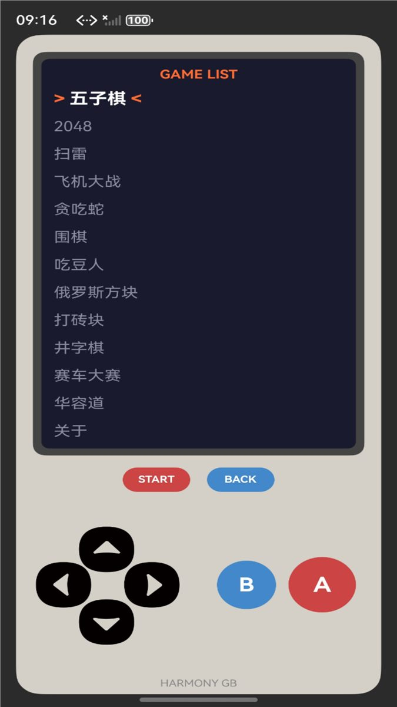
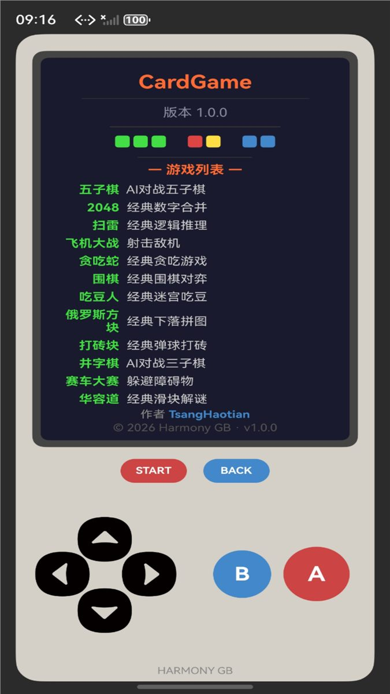
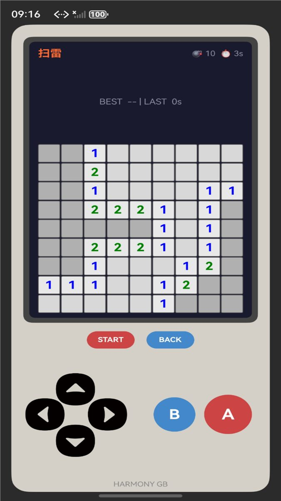
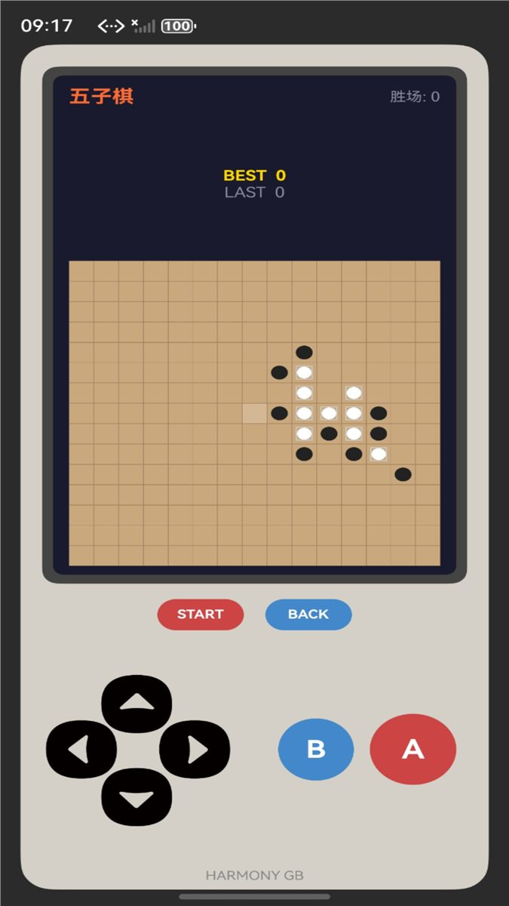

鸿蒙怀旧掌机风格的多功能娱乐应用
一款 HarmonyOS NEXT 上的怀旧掌机风格多功能娱乐应用，集成 12 款经典益智互动玩法。复古 Game Boy 风格界面，十字键 + A/B 按键操控，支持手机、平板、电视等多设备。开发环境为 HarmonyOS SDK 6.0.2 (API 22)，使用 ArkUI + ArkTS。
| 游戏 | 说明 |
|---|---|
| 2048 | 滑动合并数字方块 |
| 扫雷 | 9×9 经典扫雷 |
| 贪吃蛇 | 经典贪吃蛇，穿墙模式 |
| 俄罗斯方块 | 经典下落方块游戏 |
| 打砖块 | 挡板反弹消砖块，多关卡 |
| 五子棋 | 五子连珠，AI 交互 |
| 围棋 | 围棋，支持提子规则与 AI |
| 井字棋 | 3×3 经典井字棋 |
| 吃豆人 | 迷宫吃豆 |
| 赛车 | 躲避对向来车 |
| 飞机大战 | 竖屏射击躲避 |
| 华容道 | 关卡系统 |
点击图片可放大查看



这个项目本来准备上架华为应用市场的，结果个人开发者不能上架游戏类应用（需要版号），卡在最后一步放弃了，干脆开源出来。所以如果你看到应用里还有隐私政策弹窗、应用截图什么的，那都是当时上架准备留下的痕迹 ¯\\_(ツ)_/¯
不过这次上架经历也不是完全白忙活，至少把鸿蒙应用上架的整套流程摸了一遍——从签名、图标双层图层、隐私政策到应用分类，该踩的坑一个没落下。具体的心路历程可以看看博客《上架鸿蒙应用后续来了》。